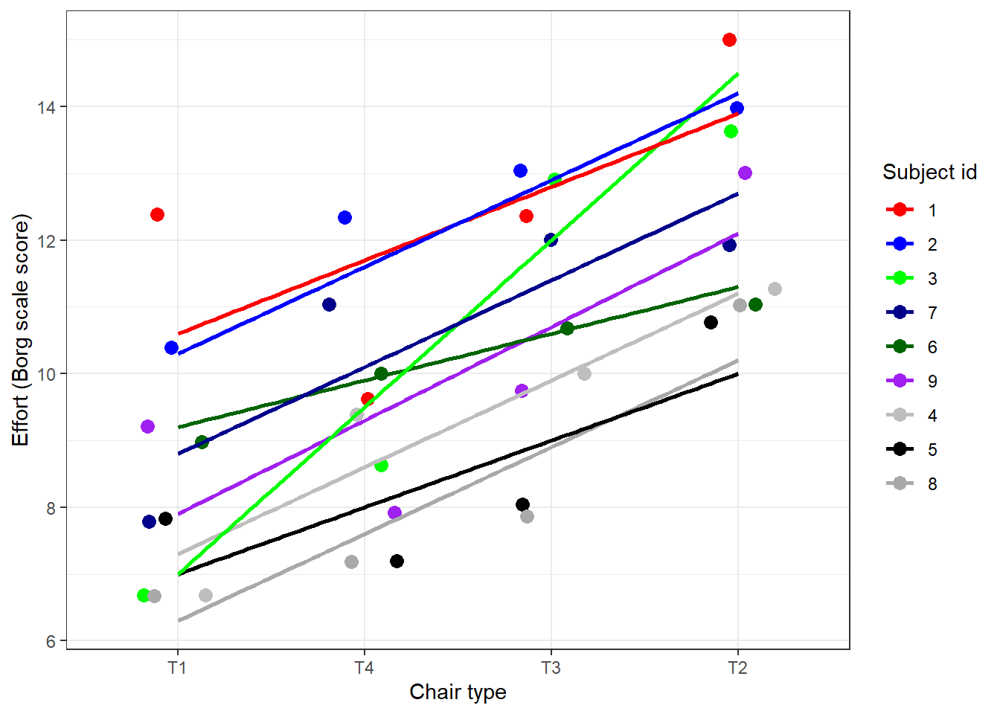

Chapter 4 Reproducible research
# install.packages("devtools") ## if not already installed
devtools::install_github("uashogeschoolutrecht/toolboxr")## Using GitHub PAT from the git credential store.## Skipping install of 'toolboxr' from a github remote, the SHA1 (e43ee4ec) has not changed since last install.
## Use `force = TRUE` to force installation##
## Attaching package: 'nlme'## The following object is masked from 'package:dplyr':
##
## collapselibrary(ggsignif)
ergo_model <- lme(
data = ergoStool, # the data to be used for the model
fixed = effort ~ Type, # the dependent and fixed effects variables
random = ~1 | Subject # random intercepts for Subject variable
)| Value | Std.Error | DF | t-value | p-value | |
|---|---|---|---|---|---|
| (Intercept) | 8.5555556 | 0.5760123 | 24 | 14.853079 | 0.0000000 |
| TypeT2 | 3.8888889 | 0.5186838 | 24 | 7.497610 | 0.0000001 |
| TypeT3 | 2.2222222 | 0.5186838 | 24 | 4.284348 | 0.0002563 |
| TypeT4 | 0.6666667 | 0.5186838 | 24 | 1.285305 | 0.2109512 |
# install.packages("ggsignif")
ergo_model <- lme(
data = ergoStool, # the data to be used for the model
fixed = effort ~ Type, # the dependent and fixed effects variables
random = ~1 | Subject # random intercepts for Subject variable
)plot_ergo_slopes <- ergoStool %>%
ggplot(aes(x = reorder(Type, effort), y = effort)) +
geom_jitter(aes(colour = reorder(Subject, -effort)),
width = 0.2, size = 3) +
geom_smooth(aes(group = Subject, colour = Subject), method = "lm", se = FALSE) +
scale_colour_manual(
values = c(
"red","blue",
"green", "darkblue",
"darkgreen", "purple",
"grey", "black", "darkgrey")
) +
ylab("Effort (Borg scale score)") +
xlab("Chair type") +
guides(colour=guide_legend(title="Subject id")) +
theme_bw()
plot_ergo_slopes## `geom_smooth()` using formula = 'y ~ x'
library(ggsignif)
p_values <- result$tTable %>% as.data.frame()
annotation_df <- data.frame(Type=c("T1", "T2"),
start=c("T1", "T1"),
end=c("T2", "T3"),
y=c(16, 14),
label=
paste("p-value:",
c(
formatC(
p_values$`p-value`[2], digits = 3),
formatC(
p_values$`p-value`[3], digits = 3)
)
)
)
set.seed(123)
ergoStool %>%
ggplot(aes(x = reorder(Type, effort),
y = effort)) +
geom_boxplot(colour = "darkgreen",
outlier.shape = NA) +
geom_jitter(aes(
colour = reorder(Subject, -effort)),
width = 0.2,
size = 3) +
scale_colour_manual(
values = c(
"red", "blue","green",
"darkblue", "darkgreen",
"purple", "grey", "black",
"darkgrey")) +
ylab("Effort (Borg scale score)") +
xlab("Chair type") +
guides(colour=guide_legend(title="Subject id")) +
ylim(c(6,20)) +
geom_signif(
data=annotation_df,
aes(xmin=start,
xmax=end,
annotations=label,
y_position=y),
textsize = 5, vjust = -0.2,
manual=TRUE) +
theme_bw() -> plot_ergo## Warning in geom_signif(data = annotation_df, aes(xmin = start, xmax = end, : Ignoring unknown aesthetics: xmin, xmax,
## annotations, and y_position